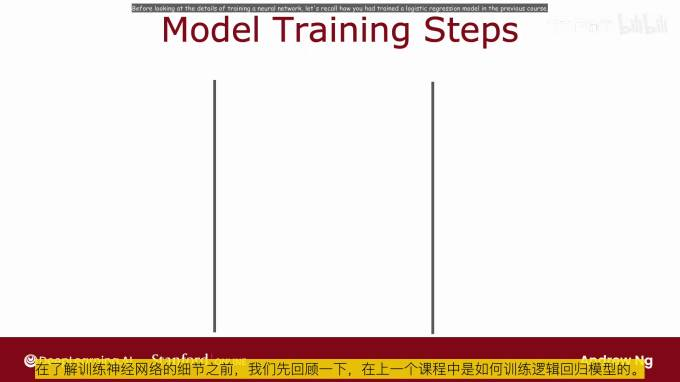
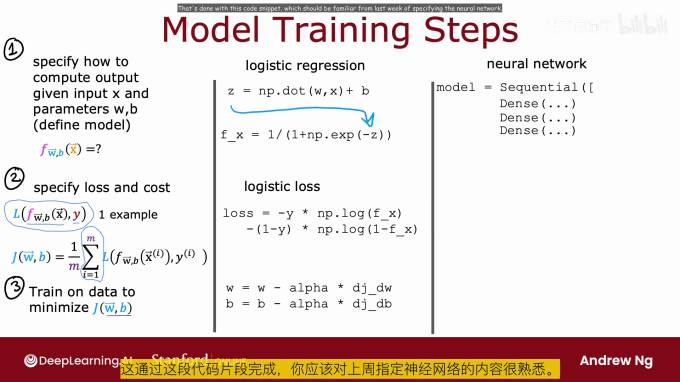
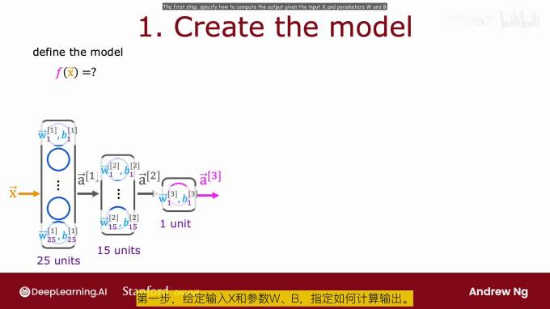
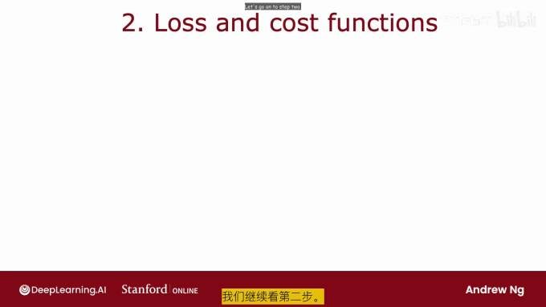
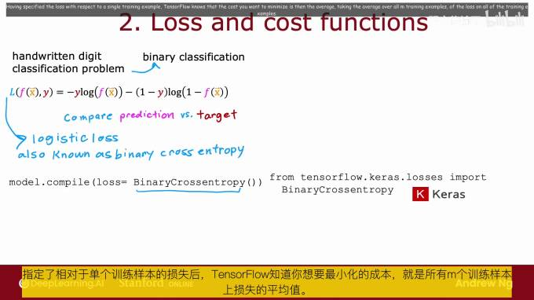
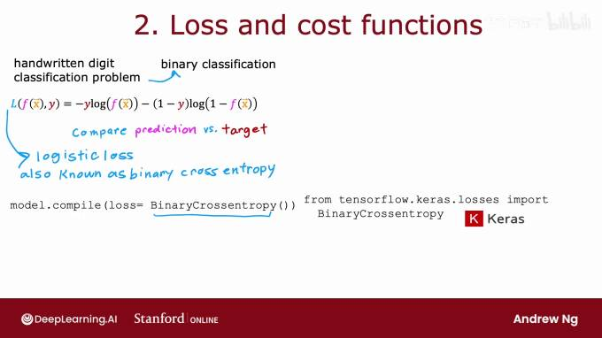
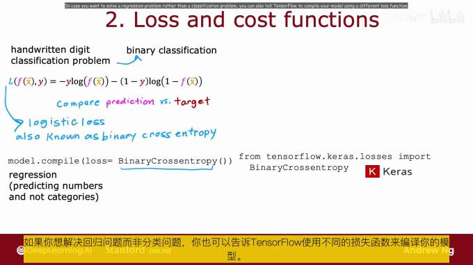
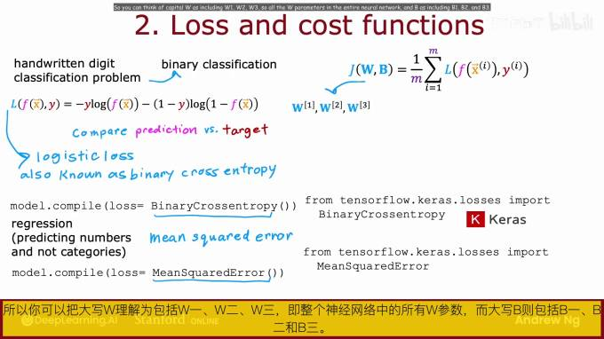
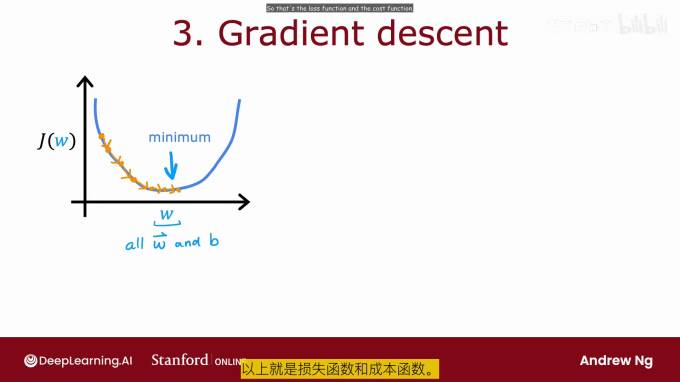
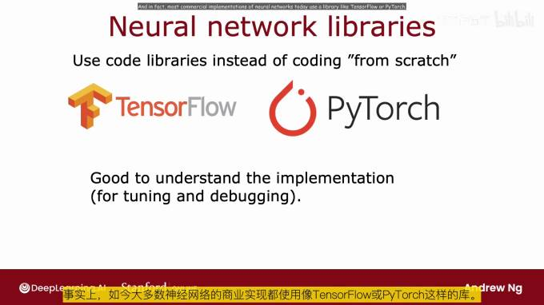

00:02让我们来看看，用 TensorFlow 代码训练神经网络的细节，它到底在做什么。
00:10我们来深入探讨一下。
00:13在了解训练神经网络的细节之前，我们先回顾一下，在上一个课程中是如何训练逻辑回归模型的。

00:22构建逻辑回归模型的第一步，是给定输入特征 x 和参数 w、b，指定如何计算输出。
00:34所以在第一门课中，我们说逻辑回归函数预测 f(x)等于 g，也就是对 w 点乘 x 加 b 应用 sigmoid 函数，即对 w 点乘 x 加 b 应用 sigmoid 函数。n。
00:50所以如采2定 W 点乘 X 加 b，那么 f 就等于一除以一加 e 的负 z 次方。
01:05我们必须指定逻辑回归从输入到输出的函数是什么。
01:12这取决于输入 x 和模型的参数。
01:17第二步，训练逻辑回归模型需要指定损失函数，还有成本函数。
01:26你或许还记得，损失函数是指，如果逻辑回归输出 f(x)，而真实标签，也就是训练集中的实际标签是 y，那么该单个训练样本的损失，等于负 y 乘以 log(f(x))，再减去一减 y 乘以 log（一减 f（x))。
01:37也就是训练集中的实际标签是 y，那么该单个训练样本的损失，等于负 y 乘以 log(f(x))，再减去一减 y 乘以 log(一减 f(x))。
01:50这衡量了逻辑回归在单个训练样本(x,y)上的表现好坏。
02:00有了损失函数的定义，我们接着定义成本函数。
02:07而成本函数是参数 w 和 b 的函数。
02:11它就是对所有 m 个训练样本的损失函数求平均值，这些损失函数是在 m 个训练样本(x 一，Y 一)到(x，）上计算得出的。N。
02:26请记住，按照我们使用的惯例，损失函数是学习算法的输出和真实标签的函数，针对单个训练样本计算。
02:39而成本函数 J，则是在整个训练集上计算的损失函数的平均值。
02:47这就是我们构建逻辑回归时的第二步。
02:52然后，训练逻辑回归模型的第三步，也是最后一步，是使用一种算法，特别是梯度下降，来最小化那个成本函数 J(w,b)，将其作为参数 w 和 b 的函数来最小化。 N。
03:09我们使用梯度下降来最小化成本 J，将其作为参数的函数，其中 w 更新为 w 减去学习率 alpha 乘以 J 对 w 的导数。
03:24类似地，b 更新为 b 减去学习率 alpha 乘以 J 对 b 的导数。
03:35通过这三步，第一步，指定给定输入 x 和参数时如何计算输出。
03:42第二步，指定损失和成本。
03:45第三步，最小化成本函数，我们训练了逻辑回归。
03:50同样的三步也是我们在 TensorFlow 中训练神经网络的方法。
03:56现在，我们来看看这三步如何对应到训练神经网络上。
04:01我们将在接下来的三张幻灯片中更详细地讲解，但简单来说，第一步，给定输入 X 和参数 W、B，指定如何计算输出。
04:13这通过这段代码片段完成，你应该对上周指定神经网络的内容很熟悉。

04:20这实际上足以指定，例如，前向传播或推理算法所需的计算。
04:27第二步是编译模型，并告诉它你想使用哪种损失。
04:33这是你用来指定这个损失函数的代码，即二元交叉熵损失函数。
04:42一旦指定了这个损失，对整个训练集求平均值，就得到了神经网络的成本函数。
04:50第三步是调用一个函数，尝试将成本作为神经网络参数的函数来最小化。
04:58让我们在训练神经网络的背景下，更详细地看看这三个步骤。
05:05第一步，给定输入 X 和参数 W、B，指定如何计算输出。

05:12这段代码片段指定了神经网络的整个架构。
05:18它告诉你，第一个隐藏层有二十五个隐藏单元，接着下一层有十五个，然后有一个输出单元，并且我们使用的是 sigmoid 激活函数。n。
05:30因此，基于这段代码片段，我们也知道了参数有哪些：第一层的 w 一、b 一，第二层的参数，以及第三层的参数。
05:41所以这段代码片段指定了神经网络的整个架构，因此告诉 TensorFlow，为了计算输出 A 三或者 f，作为输入 X 和参数（这里我们记为 W、B）的函数，它需要的一切信息。

06:05在第二步中，你必须指定损失函数是什么，这也将定义我们用来训练神经网络的成本函数。
06:14对于手写数字分类问题，图像要么是零，要么是一。
06:22这里最常用的损失函数是。
06:27它其实和我们逻辑回归用的损失函数一样：负 y 乘以 log(f(x))，再减去一减 y 乘以 log(一减 f(x)，其中 y 是真实标签，有时也叫目标标签 y，而 f(x)现在是神经网络的输出。
06:40其中 y 是真实标签，有时也叫目标标签 y，而 f(x)现在是神经网络的输出。
06:49在 TensorFlow 中，这被称为二元交叉熵损失函数。
06:58在统计学中，上面这个函数被称为交叉熵损失函数。
07:06而”二元”这个词只是强调或指出这是一个二元分类问题，因为每张图像要么是零，要么是一。
07:16其语法是要求 TensorFlow 使用这个损失函数来编译神经网络。
07:23另一个历史说明：最初是一个独立于 TensorFlow 开发的库。
07:30它实际上曾是一个完全独立于 TensorFlow 的项目，但最终被合并到了 TensorFlow 中，这就是为什么我们有 tf.keras..点这个损失函数的名字。
07:45顺便说一下，我并非总能记住 TensorFlow 中所有损失函数的名字，但我自己会快速在网上搜索一下，找到正确的名字，然后把它插入到我的代码里。
07:57指定了相对于单个训练样本的损失后，TensorFlow 知道你想要最小化的成本，就是所有 m 个训练样本上损失的平均值。


08:13优化这个成本函数，将使神经网络拟合你的二元分类数据。
08:21如果你想解决回归问题而非分类问题，你也可以告诉 TensorFlow 使用不同的损失函数来编译你的模型。

08:34例如，如果你有一个回归问题，并且如果你想最小化平方误差损失，这就是平方误差损失，如果你的学习算法输出 f(x)，目标或真实标签是 y，损失等于二分之一乘以平方误差，n。
08:44这就是平方误差损失，如果你的学习算法输出 f(x)，目标或真实标签是 y，损失等于二分之一乘以平.方误差。
08:55那么你可以在 TensorFlow 中使用这个损失函数，也就是名字可能更直观的均方误差损失函数。
09:05在 TensorFlow 中，我们会尝试最小化均方误差。
09:10在这个表达式中，我用 J(W，B)来表示成本函数。
09:18成本函数是神经网络中所有参数的函数。
09:23所以你可以把大写 W 理解为包括 W 一、W 二、W 三，即整个神经网络中的所有 W 参数，而大写 B 则包括 B 一、B。

09:39因此，如果你相对于 W 和 B 优化成本函数，你就是在尝试针对神经网络中的所有参数进行优化。
09:50在上面，我也是把 f(x)写为神经网络的输出。
09:56但如果你想，我们也可以写成 f(w,b)，如果我们想强调神经网络作为 x 函数的输出，取决于神经网络所有层中的所有参数。N。
10:09以上就是损失函数和成本函数。

10:14最后，你会要求 TensorFlow 最小化成本函数。
10:20你可能还记得第一门课里的梯度下降算法。
10:24如果你使用梯度下降来训练神经网络的参数，那么你会重复地，对于每一层 L，对于每一个单元 J，根据减去学习率 alpha 乘以成本函数对该参数的偏导数，来更新。
10:51对于参数也是类似操作。
10:56在进行，比如说，一百次梯度下降迭代后，你有望得到较好的参数值。
11:05为了使用梯度下降，你需要计算的关键就是这些偏导数项。
11:12而 TensorFlow 所做的，事实上也是神经网络训练的标准做法，是使用一种称为反向传播的算法来计算这些偏导数项。TensorFlow 可以为你完成所有这些事。N。
11:28它在这个叫做 fit 的函数中实现了反向传播。
11:33所以你需要做的就是调用 model.fit(x,y)，也就是你的训练集，并告诉它进行一百次迭代或一百个 epoch。
11:44实际上，你之后会看到，TensorFlow 可以使用一种比梯度下降稍快一些的算法。
11:53这周晚些时候你也会学到更多。
11:56我知道我们在实现神经网络时严重依赖 TensorFlow 库。
12:04我在许多领域都看到过一种模式，随着技术发展，库变得更加成熟，大多数工程师会使用库，而不是从零开始编写代码。
12:17在计算的历史中，还有许多其他例子。
12:22曾经，很多很多年前，程序员必须从零开始实现自己的排序函数。
12:30但现在排序库已经非常成熟，你很可能会调用别人写的排序函数，而不是自己实现，除非你正在上计算机课，如。
12:44而今天，如果你想计算一个数的平方根，比如七的平方根是多少？
12:50曾经，程序员得自己写代码来计算这个，但现在几乎所有人都只是调用一个库来求平方根，或进行矩阵运算，比如将两个矩阵相乘。n。
13:05所以当深度学习还比较年轻、不太成熟时，包括我在内的许多开发者都是用 Python、C 或其他库从零开始实现东西。
13:16但今天，深度学习库已经足够成熟，大多数开发者会使用这些库。
13:23事实上，如今大多数神经网络的商业实现都使用像 TensorFlow 或 PyTorch 这样的库。

13:31但如我所提，理解它们底层的工作原理仍然有用，这样如果发生意料之外的事（这在今天的库中仍会发生），你更有可能知道如何修复它。
13:44现在你知道了如何训练一个基本的神经网络，也叫多层感知器，你可以对神经网络做一些改动，让，它变得更强大。
13:57在下一个视频中，我们来看看如何换用不同的激活函数，作为我们一直使用的 sigmoid 激活函数的替代。
14:07这将使你的神经网络工作得更好。